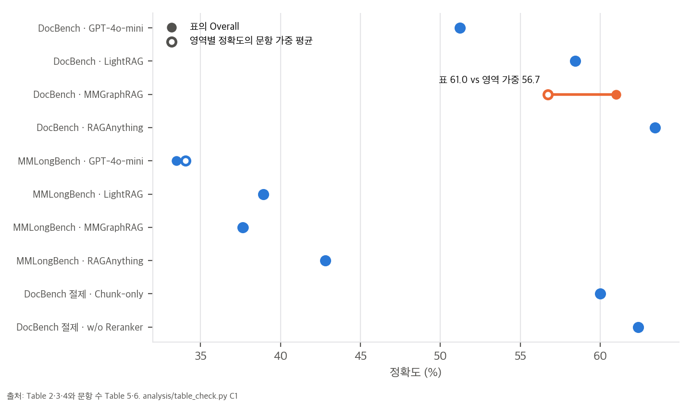
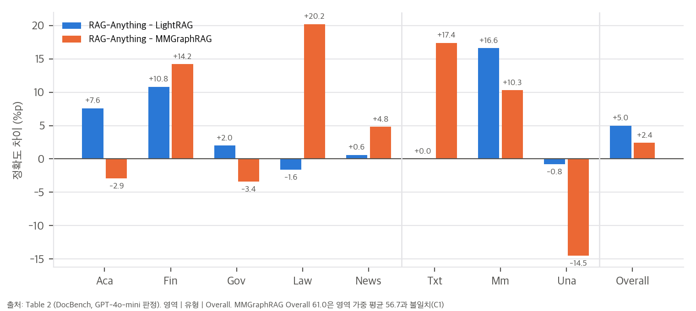
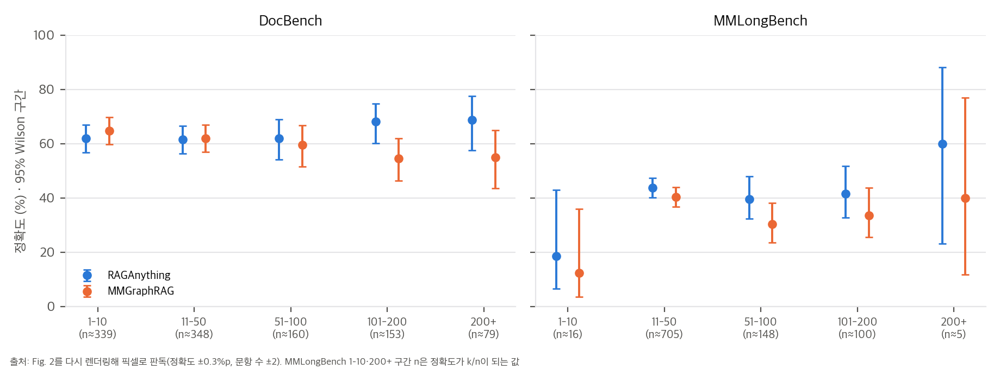

reproduce/query.py는 VLM 답 생성(Eq. 6)을 끄고, 판정 fallback은 "incorrect"를 정답으로 채점한다(toy 9개 중 4개 오채점). 재현 스크립트는 논문 6개월 뒤에 추가되었다.2cd2b33 2026-10-28 = v1.4.4, 논문 시점 커밋 806ac9b 2025-10-13)aaebfe1)한 줄 요약: PDF·Office 문서를 MinerU로 텍스트, 그림, 표, 수식 단위로 쪼개고, 그림·표·수식은 VLM/LLM으로 설명문과 개체 요약을 만들어 LightRAG식 지식 그래프에 "앵커 노드"로 넣습니다. 그다음 그래프 탐색과 벡터 검색을 섞어 답합니다. 사실상 LightRAG의 멀티모달 확장입니다.
논문이 내세우는 기여는 세 가지입니다(Sec. 1).
문서 k_i ──MinerU 파서──▶ 원자 단위 {c_j = (t_j, x_j)} t_j ∈ {text, image, table, equation, ...} (Eq. 1)
│
├─ 텍스트 단위 ──▶ LightRAG 개체·관계 추출 ──▶ 텍스트 지식 그래프
│
└─ 비텍스트 단위 ──VLM/LLM(주변 문맥 C_j, 창 δ)──▶ 설명문 d_j^chunk + 개체 요약 e_j^entity
├─ 앵커 노드 v_j^mm (이름, 유형, 요약)
└─ R(d_j^chunk) = (V_j, E_j) 내부 개체·관계 + (u ─belongs_to→ v_j^mm) (Eq. 2–4)
▼
개체 이름으로 두 그래프 병합 → G = (V, E), 임베딩 표 T = emb(개체 ∪ 관계 ∪ 청크) → 색인 I = (G, T) (Eq. 5)
▼
질의 q ──▶ (i) 구조 탐색: 개체 매칭 + 이웃 확장 → C_stru(q)
(ii) 의미 매칭: 임베딩 top-k → C_seman(q)
→ 후보 합집합, 구조 중요도·의미 유사도·질의의 모달 선호를 합친 점수로 순위 → C*(q)
▼
텍스트 문맥 P(q) + 검색된 시각 자료를 원본 이미지로 되돌림 V*(q) → Response = VLM(q, P(q), V*(q)) (Eq. 6)
belongs_to 간선을 겁니다(Eq. 3–4).검색된 개체 요약, 관계 설명, 청크 내용을 구분자와 함께 이어 붙여 텍스트 문맥 P(q)를 만듭니다. 시각 자료에 해당하는 청크는 원본 이미지로 되돌려(V*(q)) VLM에 함께 넣습니다. 즉 검색은 텍스트 대리 표현으로 하고, 추론에는 원본 이미지를 씁니다.
| 벤치마크 | 문서 | 평균 쪽 | 평균 토큰 | 문서 유형 | 질문 |
|---|---|---|---|---|---|
| DocBench | 229 | 66 | 46,377 | 5 (학술, 금융, 정부, 법률, 뉴스) | 1,102 |
| MMLongBench(-Doc) | 135 | 47.5 | 21,214 | 7 | 1,082 |
DocBench (Table 2, 정확도 %):
| 방법 | Aca. | Fin. | Gov. | Law | News | Txt. | Mm. | Una. | Overall |
|---|---|---|---|---|---|---|---|---|---|
| GPT-4o-mini | 40.3 | 46.9 | 60.3 | 59.2 | 61.0 | 61.0 | 43.8 | 49.6 | 51.2 |
| LightRAG | 53.8 | 56.2 | 59.5 | 61.8 | 65.7 | 85.0 | 59.7 | 46.8 | 58.4 |
| MMGraphRAG | 64.3 | 52.8 | 64.9 | 40.0 | 61.5 | 67.6 | 66.0 | 60.5 | 61.0 |
| RAG-Anything | 61.4 | 67.0 | 61.5 | 60.2 | 66.3 | 85.0 | 76.3 | 46.0 | 63.4 |
MMLongBench (Table 3, Overall): GPT-4o-mini 33.5, LightRAG 38.9, MMGraphRAG 37.7, RAG-Anything 42.8입니다. 7개 영역 중 4개에서 최고입니다.
해석 (재계산은 04_code_verification.md §3과 analysis/table_check.py):
그림을 다시 렌더링해 픽셀로 읽었습니다(정확도 ±0.3%p, 문항 수 ±2).
| 구간(쪽) | DocBench n | RAG-Anything | MMGraphRAG | MMLongBench n | RAG-Anything | MMGraphRAG |
|---|---|---|---|---|---|---|
| 1–10 | ≈339 | 61.9 | 64.8 | ≈16 | 18.6 | 12.3 |
| 11–50 | ≈348 | ≈61.6 | 62.0 | ≈705 | 43.7 | 40.3 |
| 51–100 | ≈160 | 61.9 | 59.5 | ≈148 | 39.6 | 30.4 |
| 101–200 | ≈153 | 68.1 | 54.5 | ≈100 | 41.5 | 33.6 |
| 200+ | ≈79 | 68.7 | 54.9 | ≈5 | 59.9 | 39.9 |
| 변형 | Overall | 전체 대비 |
|---|---|---|
| Chunk-only (그래프 없이 청크 검색만) | 60.0 | −3.4 (p ≈ 0.10) |
| w/o Reranker | 62.4 | −1.0 (p ≈ 0.63) |
| RAG-Anything | 63.4 |
04 D2).텍스트 중심 검색 편향(질의가 그림을 요구해도 텍스트 근거를 먼저 가져옴)과, 비표준 레이아웃·병합 셀 표에서의 경직된 공간 처리입니다. 적응형 공간 추론과 레이아웃 인식 파싱이 필요하다고 정리합니다.
04 D3, D4). 질의어 기반 모달 선호, 구조 중요도·의미·모달을 합친 융합 점수, "정확한 개체 매칭 + 지정 hop 확장"이 그것입니다. 코드의 검색은 LightRAG mix 모드입니다. LLM이 뽑은 키워드로 개체·관계 벡터 DB를 검색하고(top_k, 코사인 ≥ 0.2), 1-hop 이웃을 붙이고, 벡터 청크와 합칩니다. 논문은 이 장치들을 하나의 새로운 하이브리드 검색처럼 서술하지만, 구현은 기반 라이브러리의 기존 모드입니다.04 D1). 앵커 노드 이름에는 " (image)" 같은 유형 접미사가 붙어서 텍스트 개체와는 병합되지 않습니다. 두 그래프는 내부 개체 이름이 문자열로 정확히 같을 때만 이어집니다. 동의어나 표기 변형을 맞추는 정렬 단계는 없습니다.04 D5). reproduce/query.py는 vlm_enhanced=False로 질의하므로 답은 텍스트 문맥만 보고 생성됩니다. 재현 스크립트는 논문보다 6개월 늦은 2026-04-13에 추가되었습니다. 논문 수치가 VLM 답 생성으로 얻은 것인지는 알 수 없습니다.04 D8). JSON 파싱에 실패하면 응답에서 키워드를 찾는데, 긍정 키워드를 부분 문자열로 먼저 검사합니다. 그래서 "incorrect", "mismatch", "not accurate"가 정답(1)으로 채점됩니다. toy 응답 9개 중 4개가 잘못 채점되었습니다. 실제 영향은 파싱 실패 빈도에 달려 있고, 그 빈도는 공개되지 않았습니다.재계산 스크립트는 analysis/table_check.py(표·그림 수치, 결과 table_check_results.json)와 analysis/code_logic_toy.py(공식 코드 두 곳의 동작, 결과 code_logic_toy_results.json)입니다. 외부 API를 부르지 않고 CPU에서 몇 초 안에 끝납니다. 그래프는 analysis/plot_figures.py로 그렸습니다.
DocBench의 Overall은 문항 1,102개의 정답률이므로, 영역별 정확도 a_d를 영역 문항 수 n_d(Table 5: 303, 288, 148, 191, 172)로 가중 평균한 값과 같아야 합니다.
Overall = Σ_d n_d · a_d / Σ_d n_d (반올림 오차는 ±0.05%p 이내)
| 행 | 표의 Overall | 영역 가중 평균 | 차이 |
|---|---|---|---|
| GPT-4o-mini (T2) | 51.2 | 51.22 | 0.0 |
| LightRAG (T2) | 58.4 | 58.44 | 0.0 |
| MMGraphRAG (T2) | 61.0 | 56.73 | +4.3 |
| RAG-Anything (T2) | 63.4 | 63.43 | 0.0 |
| Chunk-only / w/o Reranker (T4) | 60.0 / 62.4 | 60.00 / 62.38 | 0.0 |
| MMLongBench 네 방법 (T3) | 33.5 / 38.9 / 37.7 / 42.8 | 34.05 / 38.92 / 37.64 / 42.81 | GPT-4o-mini만 −0.55 |

MMGraphRAG 행만 4.3%p 어긋납니다. 칸 하나가 잘못 적혔다고 가정하고, Overall 61.0을 맞추려면 각 영역 값이 얼마여야 하는지 역산했습니다.
| 칸 | 표의 값 | 61.0이 되려면 | 그럴듯한가 |
|---|---|---|---|
| Aca | 64.3 | 79.8 | 낮음 |
| Fin | 52.8 | 69.2 | 가능 (그러면 Fin 1위가 MMGraphRAG) |
| Gov | 64.9 | 96.7 | 아님 |
| Law | 40.0 | 64.7 | 가능 (다른 방법의 Law는 59–62. 40.0이 유일한 이상값) |
| News | 61.5 | 88.9 | 아님 |
Fig. 2의 구간별 정확도를 그림의 문항 수로 가중 평균하면 MMGraphRAG는 60.9입니다(§3). Overall 61.0이 실제 계산값이고, 영역 칸 하나(Law나 Fin)가 잘못 적혔을 가능성이 큽니다. 이것은 가설입니다. Law가 64.7이었다면 RAG-Anything은 Law에서 2위가 아니라 3위이고, Fin이 69.2였다면 Fin 1위를 놓칩니다.
| 차이 (%p) | Txt. | Mm. | Una. | Overall |
|---|---|---|---|---|
| RAG-Anything − LightRAG | 0.0 | +16.6 | −0.8 | +5.0 |
| RAG-Anything − MMGraphRAG | +17.4 | +10.3 | −14.5 | +2.4 |

04 §1)와 정확히 맞습니다.Fig. 2를 300 dpi로 다시 렌더링하고, 막대 위끝과 표식 중심을 픽셀로 읽었습니다. 정확도 축은 64 px가 20%p, 문항 수 축은 DocBench 0.874 px/문항, MMLongBench 0.431 px/문항입니다.
| 구간 | n | RAG-Anything | MMGraphRAG | Fisher p |
|---|---|---|---|---|
| 1–10쪽 | 16 | 3/16 = 18.8%, 95% [6.6, 43.0] | 2/16 = 12.5%, [3.5, 36.0] | 1.0 |
| 200쪽 이상 | 5 | 3/5 = 60%, [23.1, 88.2] | 2/5 = 40%, [11.8, 76.9] | 1.0 |

그림에서 가장 극적으로 보이는 MMLongBench 200쪽 이상의 60% vs 40%는 한 문항 차이입니다. 긴 문서에서의 이득은 DocBench 101쪽 이상(약 230문항)과 MMLongBench 51–200쪽(약 250문항)에서만 근거가 있습니다.
문항별 결과가 공개되지 않아서, 같은 n의 두 비율을 비대응 z 검정으로 근사했습니다. 같은 문항을 푼 대응 자료이므로 실제 McNemar 검정은 이보다 민감할 수 있습니다. 아래 p값은 보수적인 근사로 읽어야 합니다.
| 비교 | 차이 | p (비대응 근사) |
|---|---|---|
| DocBench vs MMGraphRAG | +2.4 | 0.25 |
| DocBench vs LightRAG | +5.0 | 0.016 |
| MMLongBench vs MMGraphRAG | +5.1 | 0.016 |
| MMLongBench vs LightRAG | +3.9 | 0.065 |
| Chunk-only → 전체 (Table 4) | +3.4 | 0.10 |
| w/o Reranker → 전체 | +1.0 | 0.63 |
RAG-Anything의 Overall 95% Wilson 구간은 DocBench [60.5, 66.2], MMLongBench [39.9, 45.8]입니다. "그래프 구성이 필수"(Sec. 3.3)라는 결론은 p ≈ 0.10인 3.4%p 차이 하나에 기대고 있습니다.
modalprocessors.py를 읽으면 그래프 구성 규칙은 다음과 같습니다(논문 시점 806ac9b와 HEAD 모두 같음).
" (image)", " (table)" 같은 유형 접미사를 붙인 것입니다(HEAD 1139–1141행).extract_entities)을 돌립니다.개체 → 앵커로 belongs_to 간선(weight 10.0)을 추가합니다.그래서 텍스트 쪽 개체에서 출발한 1-hop 탐색이 그림 앵커에 닿으려면, 앵커의 내부 개체 m개 중 하나 이상이 텍스트 개체와 이름이 정확히 같아야 합니다. 내부 개체 하나가 텍스트 개체와 같은 이름일 확률을 p라고 두면 다음과 같습니다.
P(앵커가 텍스트 그래프와 연결) = 1 − (1 − p)^m
| p \ m | 2 | 5 | 10 |
|---|---|---|---|
| 0.05 | 0.10 | 0.23 | 0.40 |
| 0.1 | 0.19 | 0.41 | 0.65 |
| 0.2 | 0.36 | 0.67 | 0.89 |
| 0.4 | 0.64 | 0.92 | 0.99 |
(시뮬레이션 2,000개 앵커로 확인, code_logic_toy.py G)
해석:
operate.py _get_node_data), 앵커나 내부 개체가 직접 벡터로 검색될 수 있습니다. 즉 이 시스템에서 그림에 닿는 주된 경로는 "그래프 탐색"보다 개체 설명의 벡터 검색일 가능성이 큽니다. 논문이 강조하는 "dual graph의 개체 정렬"이 실제로 얼마나 기여하는지 보려면, 병합을 끈 절제가 필요합니다.reproduce/llm_answer_evaluator.py의 create_fallback_evaluation(229–268행)은 판정 응답이 JSON으로 파싱되지 않을 때 쓰입니다. 순서는 다음과 같습니다.
"accuracy": n, accuracy … n, correct … n, accurate … n 패턴에서 첫 숫자를 찾습니다. 그 숫자가 0이나 1이 아니면 그 패턴은 버립니다.correct, accurate, right, yes, true, match)를 부분 문자열로 먼저 검사하고, 그다음 부정 키워드를 봅니다.규칙을 그대로 옮겨 9개 응답에 적용한 결과입니다.
| 판정 응답 | 의도 | 채점 |
|---|---|---|
| "The generated answer is incorrect." | 0 | 1 |
| "Incorrect: the expected value is DKK 26,778 million, …" | 0 | 1 (첫 숫자 26이 0/1이 아니라 패턴을 버리고, "incorrect" ⊃ "correct") |
| "… does not match … (mismatch in the year)." | 0 | 1 |
| "Not accurate; the model chose the VAE panel." | 0 | 1 |
| "This is wrong." | 0 | 0 |
| "The generated answer is correct." | 1 | 1 |
닫는 괄호가 없는 {"accuracy": 1, … / {"accuracy": 0, … |
1 / 0 | 1 / 0 |
| "Accuracy: 0 because the panel is wrong" | 0 | 0 |
의도가 0인 응답 7개 중 4개가 정답으로 채점됩니다. 기본 판정 모드가 여러 지표를 함께 요구하는 comprehensive라서 JSON이 길어지고 깨질 여지도 커집니다. 다만 이 경로는 파싱이 실패할 때만 쓰이므로, 논문 수치에 실제로 얼마나 영향을 주었는지는 실패 빈도를 알아야 판단할 수 있습니다. 이 스크립트는 논문 이후에 추가되었으므로, 논문 수치를 이 스크립트로 냈다는 증거도 없습니다.
논문에는 비용이 없습니다. 공개 설정(GPT-4o-mini, text-embedding-3-large, 청크 1,200 토큰, gleaning 1회, 질의 문맥 32,000 토큰)으로 텍스트 처리만 어림하면 다음과 같습니다. 가격(입력 $0.15/M, 출력 $0.60/M, 임베딩 $0.13/M)은 내 사전 지식이라 확인이 필요합니다.
| 벤치마크 | 문서 토큰 | LLM 입력 | LLM 출력 | 임베딩 | 합계(텍스트만) |
|---|---|---|---|---|---|
| DocBench (229문서, 1,102문항) | 10.6 M | 88.6 M | 10.6 M | 15.9 M | 약 $22 |
| MMLongBench (135문서, 1,082문항) | 2.9 M | 52.9 M | 2.9 M | 4.3 M | 약 $10 |
여기에 그림·표·수식마다 부르는 VLM 호출(이미지 토큰 포함)이 더해집니다. 문서당 그림 수가 논문에 없어서 이 부분은 추정하지 않았습니다. 방법 하나를 벤치마크 하나에 돌리는 비용은 수십 달러 수준으로 보입니다. 질의 입력(문항당 약 33,500 토큰)이 의외로 큽니다. DocBench에서는 색인 추출 입력(약 48 M)과 비슷한 규모(약 37 M)이고, 문서가 짧은 MMLongBench에서는 색인(약 13 M)의 세 배쯤 됩니다.
HKUDS/RAG-Anything HEAD 2cd2b33(2026-10-28, v1.4.4)와 논문 시점 커밋 806ac9b(2025-10-13; config.py, modalprocessors.py, query.py, prompt.py만 받아 비교). 기반 라이브러리 HKUDS/LightRAG HEAD aaebfe1(2026-10-14).| 논문 | 구현 위치 | 일치 여부 |
|---|---|---|
| 문서 분해, 모달 유형 (Eq. 1) | parser.py (MinerU 기본, Docling·PaddleOCR 선택), config.py: parser="mineru" |
✅ 논문은 MinerU만 씀 |
| 모달별 처리기 (그림·표·수식) | modalprocessors.py: ImageModalProcessor, TableModalProcessor, EquationModalProcessor, GenericModalProcessor |
✅ 오디오·비디오 처리기는 이후 추가(기본 꺼짐) |
| 상세 설명 d^chunk + 개체 요약 e^entity | 각 처리기의 generate_description_only, JSON detailed_description + entity_info{entity_name, entity_type, summary} |
✅ 요약은 최대 100단어 |
| 문맥 창 C_j, δ | ContextExtractor, config.py: context_window=1, context_mode="page", max_context_tokens=2000, context_filter_content_types=["text"] |
⚠️ D6 |
| 내부 개체 추출 R(d^chunk) (Eq. 2) | _process_chunk_for_extraction → LightRAG extract_entities |
✅ LightRAG의 일반 추출 프롬프트 그대로 |
belongs_to 간선 (Eq. 3–4) |
modalprocessors.py 857–887행: keywords "belongs_to,part_of,contained_in", weight 10.0 |
✅ weight는 논문에 없음 |
| 두 그래프의 개체 정렬·병합 | 같은 knowledge_graph_inst에 upsert_node, LightRAG merge_nodes_and_edges |
⚠️ D1 |
| 임베딩 표 T (Eq. 5) | LightRAG의 entities_vdb, relationships_vdb, chunks_vdb |
✅ 그림 설명도 같은 chunks_vdb에 들어감 |
| 모달 인식 질의 인코딩, 융합 점수 | 해당 코드 없음 | ❌ D4 |
| 구조 탐색 + 의미 매칭 | query.py: aquery(mode="mix") → LightRAG kg_query mix 모드 |
⚠️ D3 |
| 시각 자료 복원 + VLM 답 생성 (Eq. 6) | aquery_vlm_enhanced: 검색 프롬프트의 Image Path: 줄을 정규식으로 찾아 base64 이미지로 VLM에 전달 |
✅ 단, 재현 스크립트는 끔(D5) |
| 실험 설정 (Sec. 3.1) | reproduce/env.example, reproduce/query.py |
✅ D7 |
| 판정 프롬프트 (A.4, Fig. 10) | reproduce/llm_answer_evaluator.py |
⚠️ D8 |
| 분석 프롬프트 (A.3, Fig. 7–9) | prompt.py |
✅ 논문 시점과 일치, HEAD는 다름(D9) |
| # | 내용 | 영향 |
|---|---|---|
| D1 | "두 그래프를 만든 뒤 개체 정렬로 병합"은 같은 그래프 저장소에 넣는 것입니다. 교차 모달 쪽 노드와 텍스트 쪽 노드가 같은 LightRAG 그래프에 upsert되고, 이름 문자열이 정확히 같은 노드만 합쳐집니다. 별도의 정렬 단계(동의어, 표기 변형, 임베딩 유사도)는 없습니다. 앵커 이름에는 " (image)" 같은 유형 접미사가 붙으므로(HEAD 1139–1141행, 논문 시점도 같음) 앵커 자체는 절대 병합되지 않습니다. Fig. 1의 "Text VDB"와 "Multi-modal VDB"도 실제로는 하나의 벡터 DB입니다. |
두 그래프는 내부 개체 이름이 우연히 같을 때만 이어집니다(03 §5). "개체 정렬"의 기여를 따로 잰 절제는 없습니다. |
| D2 | 사례 연구가 설명하는 표·그림 내부 구조 그래프가 코드에 없습니다. 행 머리글, 열 머리글, 셀, 단위 노드와 row-of, column-of, header-applies-to, unit-of 간선(Sec. 3.4), 패널·축·범례 노드(Fig. 3 설명), bar-of, label-applies-to 간선(A.2)을 코드 전체에서 검색해도 찾을 수 없습니다. 표는 MinerU가 준 HTML 본문과 LLM 분석문을 이어 붙인 청크 하나(table_chunk 프롬프트)로 저장되고, 그 분석문에서 일반 개체 추출을 돌릴 뿐입니다. |
사례 연구의 "왜 맞혔는가" 설명은 코드가 하는 일이 아닙니다. LLM 추출이 우연히 그런 개체를 낼 수는 있지만, 스키마로 보장되지 않습니다. 셀 위치를 맞히는 일은 실제로는 reader가 HTML 표를 읽으며 합니다. |
| D3 | "구조 탐색"은 LightRAG의 키워드 벡터 검색 + 1-hop입니다. 논문은 "질의어와 개체의 정확한 매칭 후 지정 hop까지 이웃 확장"이라고 씁니다. 코드에서는 LLM이 질의에서 저수준·고수준 키워드를 뽑고, 개체·관계 벡터 DB를 코사인 유사도로 검색합니다(LightRAG _get_node_data, top_k 기본 40, 재현 설정 50, 임계값 0.2). 그다음 검색된 개체의 1-hop 간선만 펼칩니다. hop 수를 정하는 설정은 없습니다. |
"정확한 매칭"이 아니라 임베딩 매칭입니다. 논문의 두 경로(구조/의미)는 코드에서 둘 다 벡터 검색에서 출발합니다. |
| D4 | 모달 인식 질의 인코딩과 다중 신호 융합 점수가 없습니다. 질의에서 "figure", "table" 같은 단어를 찾아 모달 선호를 정하는 코드, 그리고 구조 중요도·의미 유사도·모달 선호를 합치는 점수가 query.py(논문 시점, HEAD 모두)에 없습니다. 후보는 LightRAG mix 모드가 개체·관계·벡터 청크를 토큰 예산 안에서 합치고, 선택적으로 reranker가 다시 정렬합니다. |
논문이 Sec. 2.3에서 서술한 핵심 검색 장치 두 개가 공개 코드로 재현되지 않습니다. 부록 A.5가 말한 "텍스트 중심 검색 편향"은 모달 선호 신호가 없는 코드 구조와 잘 맞습니다. |
| D5 | 재현 스크립트는 VLM 답 생성을 끕니다. reproduce/query.py가 rag.aquery(..., mode="mix", response_type="One Sentence", vlm_enhanced=False)로 질의합니다. 그러면 검색 문맥(그림의 텍스트 설명 포함)만 LLM에 들어가고, Eq. 6의 원본 이미지 복원은 일어나지 않습니다. 재현 스크립트는 논문 6개월 뒤인 2026-04-13(a9fb942)에 추가되었습니다. |
논문 수치가 VLM 답 생성으로 나온 것인지 알 수 없습니다. 공개 스크립트로 재현하면 Eq. 6이 빠진 설정이 됩니다. |
| D6 | 문맥 창 δ는 쪽 단위가 기본입니다(context_mode="page", context_window=1 → 앞뒤 1쪽). 텍스트 항목만 문맥으로 쓰고(context_filter_content_types=["text"]) 2,000 토큰에서 자릅니다. 논문은 δ를 단위 인덱스 거리 |
k − j |
| D7 | 실험 설정은 재현 파일과 맞습니다. reproduce/env.example은 GPT-4o-mini(OpenRouter), text-embedding-3-large(3,072), bge-reranker-v2-m3, MAX_ENTITY_TOKENS=12000 + MAX_RELATION_TOKENS=8000 = 20,000(논문 "개체+관계 20,000")이고, MAX_TOTAL_TOKENS=32000에서 20,000을 빼면 청크 12,000(논문 "청크 12,000")입니다. TOP_K=50, CHUNK_TOP_K=10, mix 모드, 한 문장 답도 같습니다. |
✅ 다만 LightRAG 버전은 논문 시점에 고정되지 않았습니다(lightrag-hku 버전 미지정). |
| D8 | 판정 스크립트에 두 가지 문제가 있습니다. (a) 기본 판정 모드가 comprehensive로, 논문 Fig. 10의 정확도 전용 프롬프트가 아니라 여러 지표(관련성, 완결성, 충실성 등)를 함께 요구합니다. (b) JSON 파싱 실패 시 fallback이 긍정 키워드를 부분 문자열로 먼저 검사해서 "incorrect", "mismatch", "not accurate"가 정답(1)으로 채점됩니다(03 §6; toy 9개 중 4개 오채점). 판정 모델은 GPT-4o-mini, temperature 0.1입니다. |
(b)는 실패 빈도만큼 정확도를 부풀립니다. 빈도는 공개되지 않았습니다. 고치는 법은 간단합니다(부정 키워드를 먼저, 단어 경계로 검사하거나 구조화 출력 강제). |
| D9 | 논문 부록의 분석 프롬프트(Fig. 7–9)는 논문 시점 806ac9b의 prompt.py와 같습니다. HEAD는 2026-05-22(섹션 경로, 주변 텍스트 메타데이터)와 2026-08-13(다이어그램 노드·간선을 모두 열거하라는 지시, 파일명 대신 의미 있는 개체명)에 바뀌었습니다. |
HEAD로 돌리면 논문과 다른 설정입니다. 논문 재현에는 806ac9b나 v1.2.8(2025-09-22)을 써야 합니다. |
| D10 | 앵커의 내부 개체 추출은 LightRAG의 gleaning(기본 1회 추가 추출)을 그대로 씁니다. 비텍스트 단위 하나당 VLM 설명 호출 1회 + 추출 호출 2회가 듭니다. | 논문에 비용 보고가 없습니다(03 §7). |
analysis/table_check.py, analysis/code_logic_toy.py)| # | 확인 항목 (출처) | 재계산 | 판정 |
|---|---|---|---|
| C1 | Overall = 영역 정확도의 문항 가중 평균 (Table 2–5) | 11개 행 중 9개가 0.1%p 안에서 일치. 나머지는 MMGraphRAG(Table 2) 61.0 vs 56.7, MMLongBench GPT-4o-mini 33.5 vs 34.05 | ⚠️ MMGraphRAG 행 불일치 |
| C1b | 단일 칸 오기 가설 | Law 40.0 → 64.7 또는 Fin 52.8 → 69.2면 61.0. Fig. 2 가중 평균 60.9가 Overall 61.0을 지지 | 가설 |
| C2 | 유형 3개(Txt, Mm, Una)로 Overall 설명 | 7개 행 공통 비율 맞춤의 잔차 최대 2.7%p | 표에 없는 유형이 있을 가능성 |
| C3 | 차이의 표본 오차 | DocBench vs MMGraphRAG +2.4 (p ≈ 0.25), vs LightRAG +5.0 (p ≈ 0.016). MMLongBench vs MMGraphRAG +5.1 (p ≈ 0.016), vs LightRAG +3.9 (p ≈ 0.065). Chunk-only −3.4 (p ≈ 0.10) | 비대응 근사 |
| C4 | 평균 쪽수 (Table 1 vs 5·6) | DocBench 66 vs 61.0 (반올림 허용 60.5–61.5 밖), MMLongBench 47.5 vs 48.3 (47.8–48.8 밖) | ⚠️ 불일치 |
| C5 | Fig. 2 (픽셀 판독) | 본문 길이별 수치와 0.1%p 안에서 일치. 문항 수 합 DocBench 약 1,079, MMLongBench 약 971(표 1,082). MMLongBench 200쪽 이상 n = 5(3 vs 2), 1–10쪽 n = 16(3 vs 2) | 극단 구간은 근거 아님 |
| C6 | GPT-4o-mini 기준선의 50쪽 제한 | DocBench 금융(평균 192쪽) 약 26%, 정부 72%만 봄 | 기준선이 구조적으로 불리 |
| C7 | 이득의 출처 | LightRAG 대비 Txt 0.0, Mm +16.6, Una −0.8. MMGraphRAG 대비 Una −14.5 | 이득은 Mm, 손해는 Una |
| C8 | 비용 (텍스트 처리만, 가격은 가정) | DocBench 약 $22, MMLongBench 약 $10 / 방법 1회 | 논문에 없음 |
| C9 | 그림 정합성 | Fig. 12의 질문이 Fig. 3 질문의 복사본 | 편집 오류 |
| E | 판정 fallback | toy 9개 중 4개 오채점 | D8 |
| G | 앵커-텍스트 그래프 연결 | P = 1 − (1 − p)^m | 03 §5 |
| 항목 | 요구 사항 | 비고 |
|---|---|---|
| 설치 | pip install raganything (+ MinerU 또는 Docling). Python 패키지라 macOS에서도 설치될 것으로 보임 |
이 맥에서는 설치하지 않았습니다. MinerU의 Apple Silicon 가속(MPS) 지원 여부는 확인하지 않았습니다 |
| 모델 | LLM, VLM, 임베딩 함수 세 개를 사용자가 넘김. 논문 설정은 GPT-4o-mini + text-embedding-3-large + bge-reranker-v2-m3(API) | 저장소에 Ollama, LM Studio, vLLM 연동 예제가 있어 로컬 모델로도 돌릴 수 있습니다 |
| GPU | 필수 아님. API 모델이면 CPU만으로 됨. 로컬 모델이면 이 맥의 Apple GPU(Metal, 통합 메모리 약 24 GiB)로 7–14B급 LLM·VLM이 현실적 | CUDA 전용 요소는 vLLM 예제뿐입니다 |
| 비용 | 벤치마크 하나에 방법 하나를 돌리면 텍스트 처리만 수십 달러(C8). 이미지 처리 비용 별도 | 내 문서 몇십 개면 몇 달러 수준으로 추정 |
| 데이터 | DocBench, MMLongBench-Doc는 공개 데이터셋 | 각 라이선스 확인 필요 |
| 프라이버시 | API를 쓰면 문서 전체(텍스트와 그림)가 외부 서버로 갑니다 | 개인 vault나 비공개 PDF에는 로컬 모델이 맞습니다 |
판단: 도구로 쓰는 것은 가능하고 장벽이 낮습니다. MIT 라이선스이고, 설치가 pip 하나이며, 이 맥에서 API 모델로도 로컬 모델로도 돌릴 수 있습니다. 다만 이번에는 설치와 API 호출을 하지 않았으므로(재현 보류) 실제로 도는지는 확인하지 않았습니다.
| 걸림돌 | 내용 |
|---|---|
| 버전 | 논문 시점 코드 806ac9b(또는 v1.2.8)와 그 당시 LightRAG 버전을 맞춰야 합니다. LightRAG 버전은 기록이 없습니다 |
| 설정 차이 | 공개 재현 스크립트는 VLM 답 생성을 끕니다(D5). 논문이 켰는지 알 수 없습니다 |
| 없는 장치 | 모달 선호와 융합 점수(D4), 표·그림 구조 그래프(D2)는 코드에 없어서, 논문 설명대로의 시스템은 재현할 수 없습니다 |
| 판정 | 판정 버그(D8)를 고치고 정확도 전용 프롬프트를 쓸지 정해야 합니다. 판정 모델이 같으면 결과가 판정자에 따라 달라질 수 있습니다 |
| 기준선 | MMGraphRAG 결과(특히 Table 2의 불일치 행, C1)를 확인하려면 기준선도 다시 돌려야 합니다 |
| 비용·시간 | 방법 4개 × 벤치마크 2개면 텍스트 처리만 약 $100–150, VLM 처리와 재시도를 더하면 그 이상입니다. 시간은 API 속도 제한에 달려 있습니다 |
판단: 코드와 설정 파일이 있어서 "대략 비슷한 숫자"를 다시 내는 것은 비용만 내면 가능합니다. 하지만 논문 Sec. 2.3이 설명한 시스템 그대로 재현할 수는 없습니다. 공개 코드는 논문보다 단순한, LightRAG mix 모드 + 멀티모달 앵커 시스템입니다.
| 구성 요소 | 난이도 | 메모 |
|---|---|---|
| 비텍스트 단위 → VLM 설명 + 앵커 노드 + belongs_to 간선 | 낮음 | 처리기 하나가 프롬프트 + JSON 파싱 + upsert 몇 번입니다. LightRAG 위에 수백 줄 |
| 검색 이미지의 원본 복원 + VLM 답 | 낮음 | 청크에 이미지 경로를 남기고 정규식으로 되찾는 방식이 단순하고 실용적입니다 |
| 논문이 서술했지만 코드에 없는 모달 선호·융합 점수, 표 셀 그래프 | 중간 | 직접 설계해야 합니다. 효과가 검증되지 않은 부분이라 연구 질문이 됩니다 |
| 평가 | 중간 | 판정자 편향과 파싱 실패 처리를 제대로 하려면 구조화 출력과 사람 검수 표본이 필요합니다 |
요약: RAG-Anything은 "멀티모달 문서를 LightRAG 그래프에 넣는 실용 도구"로서는 바로 쓸 수 있습니다. 하지만 논문의 검색 설계(모달 인식, 융합 점수, 구조 그래프)는 코드로 뒷받침되지 않습니다. 성능 주장은 표 정합성 문제(C1, C4)와 작은 차이(C3)를 감안해서 읽어야 합니다.
논문의 참고문헌에는 번호가 없어서 저자·연도로 적고, arXiv ID는 참고문헌 목록에 적힌 값을 옮겼습니다. 코드와 GitHub 정보는 2026-10-28에 gh api로 직접 확인했습니다. 그 밖의 논문은 따로 열어 검증하지 않았습니다.
[텍스트 RAG]
Graph RAG 계열
GraphRAG (Edge et al., 2024) arXiv:2404.16130 커뮤니티 요약 기반 질의 중심 요약
└─ LightRAG (Guo et al., 2024) arXiv:2410.05779 ← 같은 그룹(HKUDS). 개체·관계 그래프 + 이중 수준(low/high) 키워드 검색
HippoRAG (NeurIPS 2024), GNN-RAG arXiv:2405.20139, RAPTOR (ICLR 2024), ArchRAG arXiv:2502.09891
│
[멀티모달 RAG]
MM-VID arXiv:2310.19773 (영상 → 텍스트), VideoRAG arXiv:2502.01549 (같은 그룹)
VisRAG arXiv:2410.10594 (문서를 이미지 그대로 검색, 파싱 없음)
MMGraphRAG arXiv:2507.20804 (장면 그래프 + 텍스트 그래프, 표·수식은 텍스트 취급)
│
★ RAG-Anything (2025-10): MinerU로 파싱 → 비텍스트 단위를 VLM 설명 + 앵커 노드로 LightRAG 그래프에 삽입
차별점 요약: 구성 요소는 대부분 같은 그룹의 LightRAG에서 옵니다(개체 추출, 그래프 저장, 키워드 이중 검색, mix 모드). 새로운 부분은 세 가지입니다. 비텍스트 단위를 모달별 프롬프트로 설명하는 처리기, 설명문에서 뽑은 개체를 앵커로 묶는 belongs_to 간선, 검색된 이미지 경로를 원본 이미지로 되돌려 VLM에 넣는 답 생성입니다. 비교 대상 중 가장 가까운 것은 MMGraphRAG인데, 저자들은 MMGraphRAG가 표와 수식을 개체로 다루지 않는다는 점을 차이로 듭니다.
| 역할 | 출처 | 이 논문에서의 쓰임 |
|---|---|---|
| 문서 파싱 | MinerU (Wang et al., 2024) arXiv:2409.18839 | 텍스트·이미지·표·수식 추출. 코드 기본 파서이고 Docling, PaddleOCR도 선택 가능 |
| 텍스트 그래프·검색 | LightRAG (Guo et al., 2024) | 개체·관계 추출 프롬프트, 그래프·벡터 저장소, local/global/hybrid/mix/naive 질의 모드 |
| 그래프 RAG 원형 | GraphRAG (Edge et al., 2024) | 텍스트 그래프 구성 방식의 원형으로 인용 |
| 비교 기준선 | MMGraphRAG (Wan & Yu, 2025) | 같은 백본으로 비교 |
| 임베딩·reranker | text-embedding-3-large, bge-reranker-v2-m3 | 실험 설정 |
| 벤치마크 | DocBench (Zou et al., 2024) arXiv:2407.10701, MMLongBench-Doc (Ma et al., NeurIPS 2024) | 평가 |
| 판정 | GPT-4o-mini (부록 A.4) | 0/1 정확도 |
이 저장소의 논문들(로봇 학습, 제어)과 방법상 직접 연결은 없습니다. 연결점은 연구 도구 쪽입니다.
| 대상 | 관계 |
|---|---|
이 저장소 자체 (research_roadmap) |
논문 PDF, 그림이 있는 쪽 이미지, 표 재계산 문서가 쌓이는 코퍼스입니다. "그림 몇 번이 무엇을 보여 주나", "Table 2의 어느 칸" 같은 질의를 다루려면 이 논문 같은 멀티모달 문서 RAG가 필요합니다. 다만 이 저장소의 분석 습관(표 가중 평균 검산, 문항 수 확인)을 이 논문에 적용하면 MMGraphRAG Overall 불일치 같은 문제가 바로 드러납니다(04 C1). |
ZeroDex (zerodex/) |
둘 다 VLM에 그림을 보여 주고 구조화된 출력(JSON)을 받아 쓰는 파이프라인입니다. VLM 출력 파싱이 실패할 때의 처리(이 논문 코드의 fallback 버그, 04 D8)는 두 경우 모두 결과 신뢰도에 직접 영향을 줍니다. |
| 주제 | 관련성 | 근거 수준 |
|---|---|---|
| ColPali / ColQwen (문서 쪽 이미지를 late-interaction으로 임베딩) | 파싱 없이 쪽 이미지를 바로 검색하는 강력한 대안입니다. VisRAG와 같은 방향이고, MinerU 파싱 오류(부록 A.5의 병합 셀 실패)를 우회합니다. 비교 기준선에 없습니다. | 내 사전 지식. 서지 확인 필요 |
| M3DocRAG (다쪽 문서 멀티모달 RAG) | 같은 과제(MMLongBench-Doc 포함)를 다룬 직접 경쟁 방법으로 보입니다. | 내 사전 지식. 서지·수치 확인 필요 |
| RAG (Lewis et al., 2020) | 검색 증강 생성의 원형입니다. 논문은 서베이만 인용합니다. | 내 사전 지식 |
| LLM-as-a-judge 편향 연구 | 생성 모델과 판정 모델이 같을 때의 자기 선호 편향은 알려진 문제입니다(01 §4.2 5). |
내 해석 |
한계: 4절의 서지 정보는 내 사전 지식에 근거합니다. 블로그나 git에 올리기 전에 원문을 직접 확인해야 합니다.
| 저장소 | 무엇인가 | 공식 여부 | 라이선스 | ★ | 마지막 push | 확인한 커밋 |
|---|---|---|---|---|---|---|
| HKUDS/RAG-Anything | 이 논문의 구현. raganything/(처리기, 질의), reproduce/(색인·질의·판정 스크립트, 2026-04-13 추가) |
공식 (논문 초록에 링크) | MIT | 24,244 (fork 2,837) | 2026-10-28 | HEAD 2cd2b33(v1.4.4), 논문 시점 806ac9b(2025-10-13). 가장 가까운 릴리스 v1.2.8(2025-09-22) |
| HKUDS/LightRAG | 기반 라이브러리. 그래프 추출, 저장소, 질의 모드 | 같은 그룹의 공식 저장소 | MIT | 40,388 | 2026-10-27 | aaebfe1 (shallow clone) |
| opendatalab/MinerU | 기본 문서 파서 | 외부 의존성 | Apache-2.0 + 추가 조건(상업적 사용 임계값) | 82,671 | 2026-10-28 | b7f3dd0 (clone 안 함) |
| docling-project/docling | 대체 파서 | 외부 의존성 | MIT | 69,738 | 2026-10-28 | 9051777 (clone 안 함) |
| wanxueyao/MMGraphRAG | 비교 기준선 MMGraphRAG | 논문 저자 저장소로 보임 | Apache-2.0 | 94 | 2026-03-10 | ec0065d (clone 안 함) |
| OpenBMB/VisRAG | 파싱 없는 비전 기반 RAG (관련 연구) | VisRAG 공식 | Apache-2.0 | 986 | 2026-08-09 | 7205787 (clone 안 함) |
| microsoft/graphrag | GraphRAG 원형 | 공식 | MIT | 36,473 | 2026-10-27 | c600ff8 (clone 안 함) |
lightrag-hku 버전이 고정되어 있지 않았습니다(requirements.txt). 지금은 lightrag-hku<1.5입니다. 논문 결과를 재현하려면 2025-10 당시의 LightRAG 버전을 따로 맞춰야 합니다.